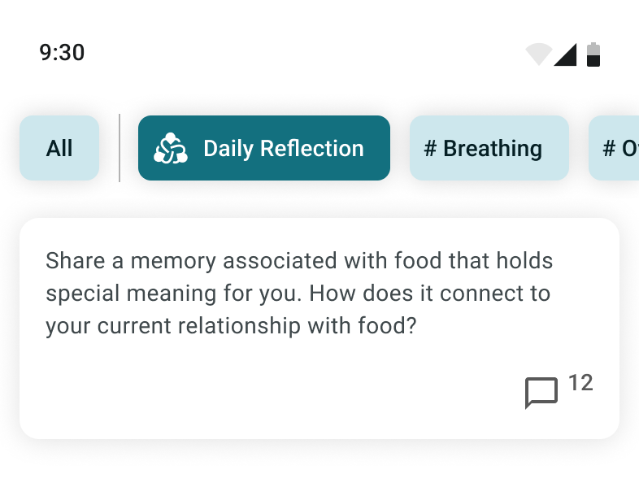

The setup
By the time I got to this problem, Lore’s community had already been through a lot. Auto-linking was in place when I joined. We ran a UI redesign. We shipped the plant — the ownership mechanic that gave people a reason to show up and tend something.
Then leadership and sales added a lock. New users couldn’t open the community until two weeks had passed or until they’d completed two explorations, which usually took about a week. It did two jobs: it let us close the community off entirely for clients who didn’t want one, and it gave everyone else a chance to understand what Lore was doing before they started influencing it.
That second job mattered because content quality was the product. Depth and anonymity were what set the Lore community apart from anywhere else you could post. “Today is a good day” was a failure state — not because it’s a bad thing to say, but because you can say it anywhere. Every post either held the bar or lowered it, and a community that drifts becomes a community you moderate forever.
So the lock protected the norms. The problem was that a lock is a delay, not a lesson. Users came out of it having spent two weeks reflecting with a bot. They hadn’t learned anything about what it looked like to participate.
What we’d already tried
- We wrote instructions. Straightforward, visible guidance on how to engage. The needle didn’t move.
- Hubs helped. Organizing around topics that skewed toward health and mental health gave people a subject worth being thoughtful about. It moved things. It wasn’t enough.
- Lore Posts existed. Collections of small user posts aggregated into an article, generated automatically once there was enough content. Enormous visual hierarchy, low click-ins, and nothing to do with them once you got there. You read one and left.
The plant had its own version of this. It worked — people showed up — but it introduced problems alongside the wins. Motivation without a subject produces exactly the low-value posting we were trying to avoid. Someone who wants to tend their plant and has nothing in particular to say will post something to get credit for posting. We wanted to curb that without giving up the plant.
Looking at all of it together, the diagnosis got clear. Everything we’d built was expository. We were describing the norms. Norms aren’t learned that way. They’re learned by watching someone else do it and then trying it yourself.
What I proposed
This one didn’t come out of a workshop. It came out of reading our company objectives and working out what the community side of them actually required, then building buy-in for it.
The proposal: replace the lock with a rehearsal. Instead of gating the community on elapsed time or the bot mechanic, new users would engage with three daily reflections before the broader community opened to them. Group reflection as the price of entry — not a wait, a practice.
The case rested on three things:
- Identity shift. The two weeks before the community opened were spent with a bot that never offers an opinion — it only asks you more questions. That’s the right posture for reflection, but it’s the opposite of what the community needed from people. In the community we wanted opinions and advice, given to another person. Nothing in onboarding asked anyone to do that even once. Three reflections would.
- Modeled behavior, three times, on topics we chose. Each reflection was a chance to watch established members answer a prompt well. That’s norm-setting you never have to write down.
- Controlled mixing. The lock separated new users from everyone else, which was the point of it — but it meant new arrivals never encountered the people who were actually good at this. A shared daily prompt gave the most active users and the newest ones a common ground, on a subject we’d picked, at a scale we could watch.
It was turned down
Not on the merits. Isolating a single hub inside the lock would have taken work, but it was clearly doable, and that never became the real objection.
The decision came from above: users were to focus on Lore bot. The bot was less risky, more predictable, and it was the surface where we could reward people. Community behavior is harder to instrument and harder to incentivize. Given a choice between the two, leadership picked the one they could control.
I had buy-in from my team. It wasn’t enough, and it didn’t ship as onboarding.
Where it actually landed
The idea had enough merit that it moved instead of dying. Daily reflections shipped inside the community rather than in front of it.

That turned out to be the fix for the plant’s side effects. The plant supplied the reason to post; the reflection supplied the substance. Someone who wanted to tend their plant now had a touchstone — a prompt worth answering, a way to earn progress honestly, and a post that reinforced the norms instead of diluting them.
It became the most visited hub. It drew a healthy comment volume, and — the part I actually cared about — those comments were almost all on target, focused on the things Lore wanted people thinking about. My read is that we also saw fewer of the empty plant-maintenance posts after it launched, though I don’t have clean numbers to separate that from everything else changing at the same time.
Tuning it
Shipping it was the easy part. I gave it a month and then went through the reflections one at a time, sorting which ones took off and which ones died on arrival. Not all of our daily reflections were good, and the failures weren’t random — some questions invited a real answer and some only invited agreement.
The bigger surprise was supply. We burned through the question store far faster than I’d projected. Even reflections that didn’t generate discussion still got visited, so people were seeing every question whether or not they answered it, and a repeat felt like a repeat. I worked with our ML team on generating more, and we kept a human in the loop to vet each one before it went out — the volume problem was solvable, but not at the cost of letting an off-tone question through.
The other problem was depth. Early on, a reflection would collect a stack of parallel monologues and then stop; a good conversation had one day to happen and no way to continue. We tried a few scheduling approaches and settled on resurfacing: a reflection that drew three or more comments on its first day got another shot in the feed, so the threads that were actually going somewhere had room to keep going.
What I take from this
Norms are a curriculum, not a policy. We spent real effort writing down how to behave and got nothing for it. What worked was giving people a structured chance to do the thing, next to people already doing it well.
A gate is not an education. The lock protected the community by keeping people out of it. That’s defensible for two weeks. It doesn’t teach anyone anything, and we were treating it as if it did.
Separate the mechanic from its placement. I lost the argument about where this belonged and still got the mechanic built. If I’d held out for the onboarding framing, the whole thing would have died with the rejection.
What I’d still want to know. My original argument was that the highest-leverage moment is before someone’s first post, and I never got to test it. Whether the onboarding version would have outperformed what shipped is an open question — I think it would have, and I can’t prove it.